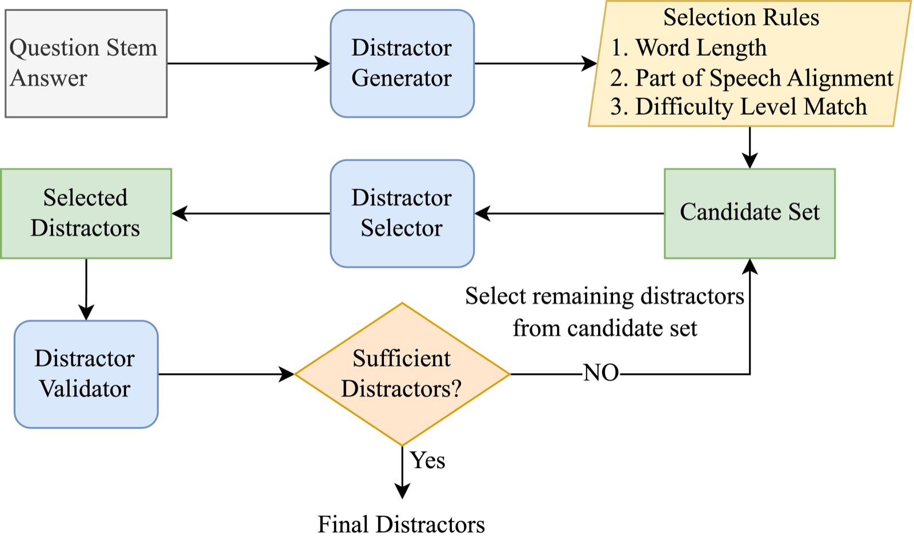
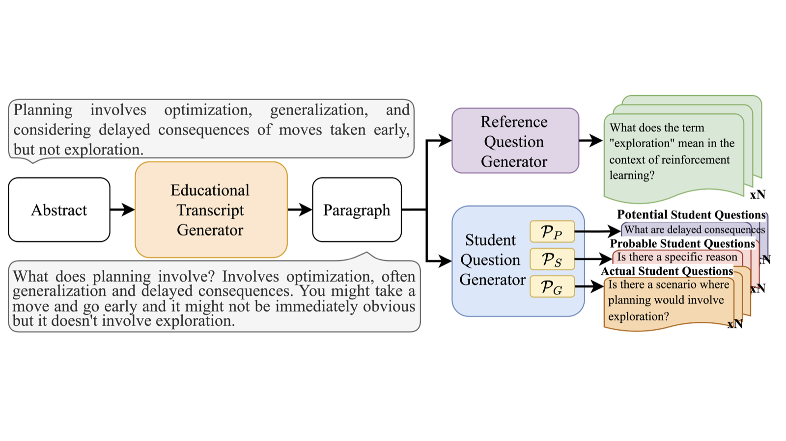
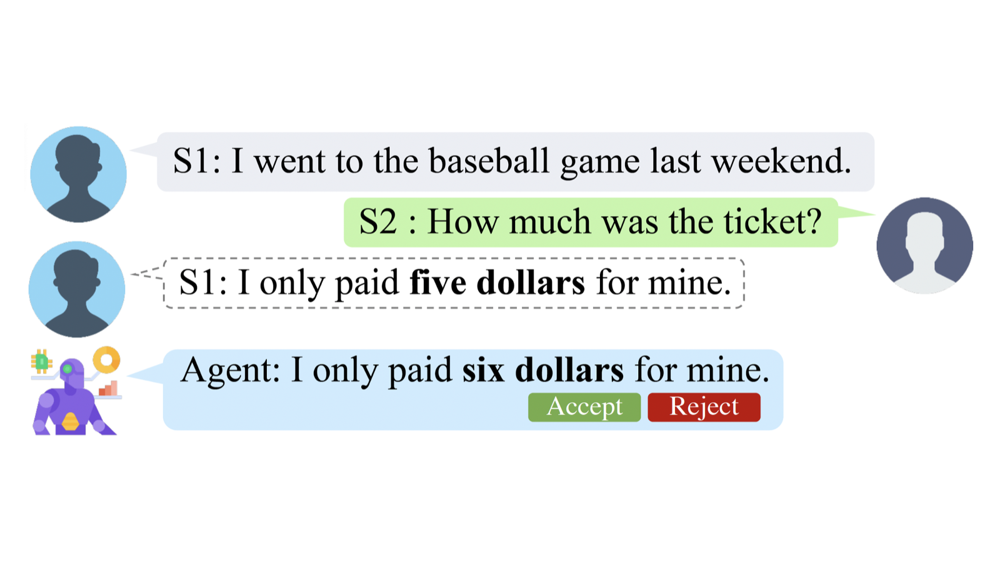
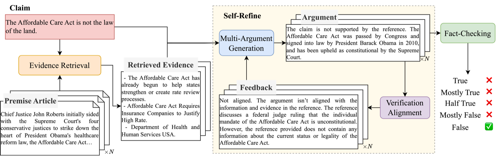
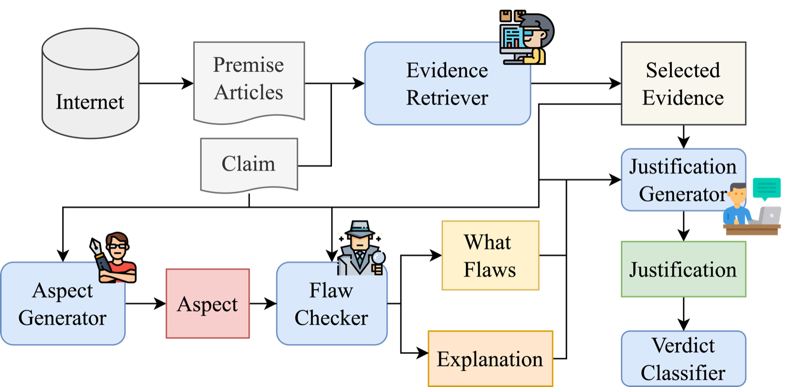
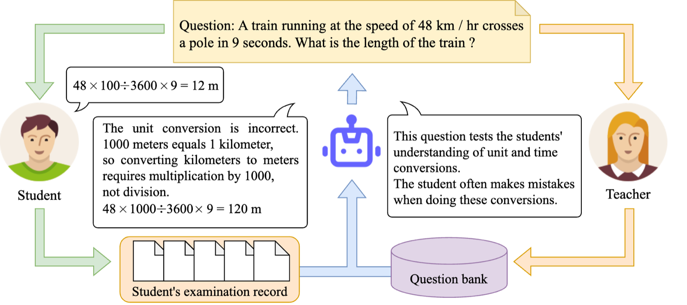
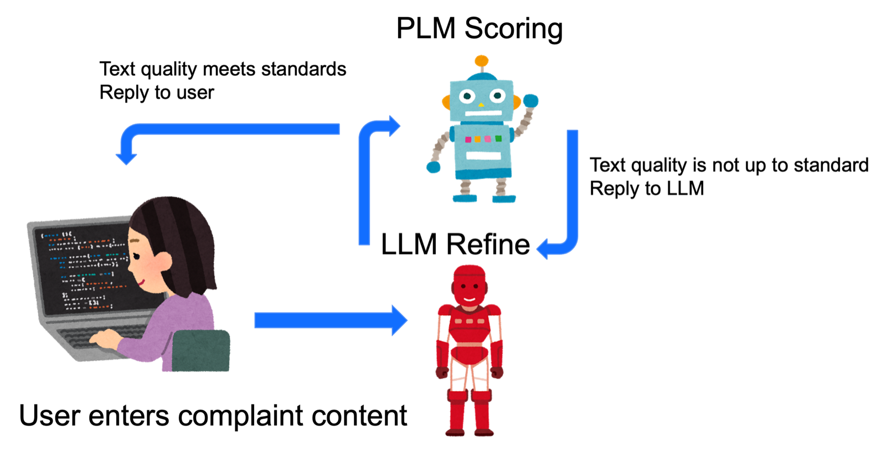

Multimodal understanding & situated intelligence
How can AI integrate what it sees, hears, and reads to understand an environment, an event, and what the user needs right now?
EgoArgusVISTAConvLogRecallerVisual lifelog retrieval
See papers
We build personalized, trustworthy, and efficient AI that brings together multimodal perception, knowledge, and reasoning to support people in daily life.
Four directions, one goal: AI that understands people and the world they live in, and helps them well.
How can AI integrate what it sees, hears, and reads to understand an environment, an event, and what the user needs right now?
How can AI use personal knowledge and interaction history to adapt to each user and each task?
How can AI reason from evidence and give help that is understandable, checkable, and appropriate?
How can AI allocate models and data to what a task needs, balancing quality against cost?
The question, the mechanism, and what we found.
An assistant sees your kitchen and hears you say "the stove is off." Which one should it believe?
Existing egocentric benchmarks test visual understanding in isolation. EgoArgus asks a harder question: when the camera and the user disagree, can the model tell which modality is trustworthy and decide whether to step in at all?
Two queries can use the same words and still be worlds apart in difficulty. Why route them the same way?
Most routers judge a query by its surface semantics or embedding. VDAR-Router first writes out an explicit difficulty analysis, retrieves past queries with a similar difficulty profile, and uses their outcomes to pick the model that balances cost and quality.
"False" is not an explanation. What exactly is wrong with the claim?
RefuteClaim reframes fact-checking as flaw-oriented verification: generate the aspects a claim should be judged on, identify the flaw under each aspect, and explain the verdict. FlawCheck, our dataset, distills expert fact-checker reviews into aspects and flaws.
A user has told the model hundreds of things about themselves. Which few should be written into its weights?
Retrieval-based personalization depends on retrieval quality and degrades over long-term interactions. Model editing writes new knowledge directly into the parameters, but editing every user sample is costly and the edits interfere with each other. PersonaEdit clusters the hidden representations of a user's data and picks representative samples by proportional stratified sampling.
A student's answer is wrong. Where did the reasoning go off track, and what should the teacher say?
MathEDU pairs real student problem-solving processes with teacher-written feedback, and evaluates models on three hierarchical tasks: is the answer correct, which step is wrong, and what feedback would help.
Our largest research line builds assistants that see the world from your point of view, listen to what you say, and decide whether, when, and how to help.
Rare or risky assistance situations are hard, costly, or unsafe to film. VISTA takes a one-line scenario seed and produces an editable plan, an egocentric video, and an auditable review trail. The platform ships 14 reviewed demonstrations across reactive, explicit proactive, and implicit proactive help, in safety-critical and everyday settings, plus matched cases where the right answer is to stay quiet.
Videos, dialogue, reviewed decisions, intervention times, and assistant messages are taken verbatim from the EgoArgus decision annotations (dataset/paper_eval.csv). The videos were generated with VISTA.
Demo systems built by lab members, with short videos.

LLMs for vocabulary test distractor generation with iterative selection and self-review.

Educational lecture abstract-based question generation.

Real-time conversational information recall, with NTU NLP Lab.

Multi-argument generation with self-refinement for domain generalization in fact-checking.

Automatic fact-checking through flaw identification and explanation.

LLMs and the future of mathematics education.

NLPFIN × NYCU-NLP: refining financial consumer complaints.
Dr. Yen's research interests include natural language processing and information retrieval. Her work has been published in AAAI, EMNLP, WWW, SIGIR, and CIKM. She received the Honorable Mention of the ACLCLP Doctoral Dissertation Award in 2020 and was a distinguished PC member at IJCAI 2023. She served as web chair of SIGIR 2023 and as a PC member of AAAI, IJCAI, CIKM, and EACL.
Prospective students: read a recent paper from the area you like, then write to us with what you would do next.